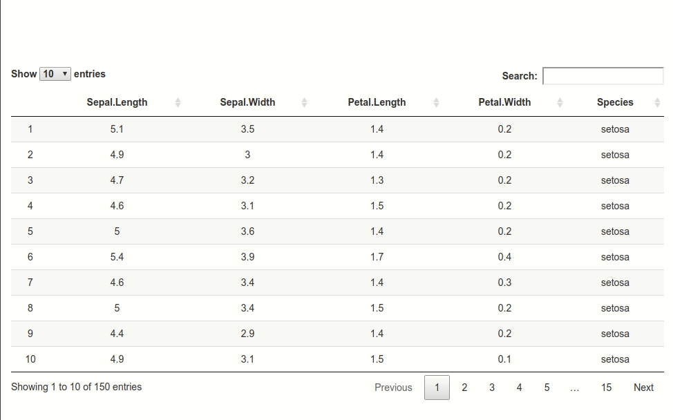

Tooltips for the headers of a datatable in Shiny
In this post, I show how to use the qTip2 JavaScript library to create some tooltips on the headers of a DT datatable in Shiny, displaying some information about the columns, such as summary statistics.
Firstly, we write a function returning some JavaScript code that creates some hidden div elements which will contain the contents of the tooltips. This function takes two arguments: n, the number of div elements to create (this will be the number of columns of the table), and prefixID; the i-th div will have the identifier {prefixID}-{i}. We also set a class to each div, namely qtip-big.
createDiv <- function(n, prefixID){
sprintf(paste(
"for(var i = 1; i <= %d; i++){",
" var div;",
sprintf(" var id = '%s-' + i.toString();", prefixID),
" if(document.getElementById(id) === null){",
" div = document.createElement('div');",
" div.setAttribute('id', id);",
" div.setAttribute('class', 'qtip-big');",
" div.style.display = 'none';",
" document.body.appendChild(div);",
" }",
"}",
sep = "\n"
), n)
}cat(createDiv(3, "TOOLTIP"))
## for(var i = 1; i <= 3; i++){
## var div;
## var id = 'TOOLTIP-' + i.toString();
## if(document.getElementById(id) === null){
## div = document.createElement('div');
## div.setAttribute('id', id);
## div.setAttribute('class', 'qtip-big');
## div.style.display = 'none';
## document.body.appendChild(div);
## }
## }Now we write a function returning some JavaScript code that writes the contents of the div elements. It takes as arguments dat, the dataframe for the table, i, the index of a column of dat, and prefixID as in the function createDiv. If the i-th column is numeric, we fill the div element with some summary statistics of this column, otherwise the information we provide in the div element is the number of levels of the contents of the column, an enumeration of the levels (at most three), and the number of missing values.
fillDiv <- function(dat, i, prefixID){
x <- dat[[i]]
if(is.numeric(x)){
sprintf(paste(
"var div = document.getElementById('%s-%d');",
"var html = '<b> Min: </b> %s</br>';",
"html = html + '<b> Max: </b> %s</br>';",
"html = html + '<b> Mean: </b> %s</br>';",
"html = html + '<b> Std. dev.: </b> %s</br>';",
"html = html + '<b> Missing values: </b> %d';",
"div.innerHTML = html;",
sep = "\n"
),
prefixID,
i,
formatC(min(x, na.rm=TRUE)),
formatC(max(x, na.rm=TRUE)),
formatC(mean(x, na.rm=TRUE)),
formatC(sd(x, na.rm=TRUE)),
sum(is.na(x)))
}else{
if(is.factor(x)) x <- as.character(x)
levels0 <- sort(unique(na.omit(x)))
nlevels <- length(levels0)
levels <-
if(nlevels>3) c(levels0[1:2], levels0[nlevels]) else levels0
ncharMax <- 25
nchars <- nchar(levels)
if(7+sum(nchars) > ncharMax){
levels[1] <- paste0("<br/>", levels[1])
if(nlevels >= 2 && sum(nchars) > ncharMax){
levels[2] <- paste0("<br/>", levels[2])
if(nlevels >= 3 && sum(nchars[2:3]) > ncharMax){
levels[3] <- paste0("<br/>", levels[3])
}
}
}
levelsSummary <- ifelse(nlevels > 3,
paste0(c(levels[1],
paste0(levels[2], ", ..."),
levels[3]),
collapse = ", "),
paste0(levels, collapse = ", "))
sprintf(paste(
"var div = document.getElementById('%s-%d');",
"var html = '<b> Number of levels: </b> %d</br>';",
sprintf("html = html + '<b> Level%s: </b> %%s</br>'",
ifelse(nlevels==1, "", "s")),
"html = html + '<b> Missing values: </b> %d'",
"div.innerHTML = html;",
sep = "\n"
),
prefixID,
i,
nlevels,
levelsSummary,
sum(is.na(x)))
}
}cat(fillDiv(iris, 1, "TOOLTIP"))
## var div = document.getElementById('TOOLTIP-1');
## var html = '<b> Min: </b> 4.3</br>';
## html = html + '<b> Max: </b> 7.9</br>';
## html = html + '<b> Mean: </b> 5.843</br>';
## html = html + '<b> Std. dev.: </b> 0.8281</br>';
## html = html + '<b> Missing values: </b> 0';
## div.innerHTML = html;
cat(fillDiv(iris, 5, "TOOLTIP"))
## var div = document.getElementById('TOOLTIP-5');
## var html = '<b> Number of levels: </b> 3</br>';
## html = html + '<b> Levels: </b> <br/>setosa, versicolor, virginica</br>'
## html = html + '<b> Missing values: </b> 0'
## div.innerHTML = html;Finally we write a function returning the JavaScript code of the qTip tooltips. Its arguments are n, the number of columns of the table, and prefixID as before.
tooltips <- function(n, prefixID){
settings <- sprintf(paste(
"{",
" overwrite: true,",
" content: {",
sprintf(" text: $('#%s-%%s').clone()", prefixID),
" },",
" show: {",
" ready: false",
" },",
" position: {",
" my: 'bottom %%s',",
" at: 'top center'",
" },",
" style: {",
" classes: 'qtip-youtube'",
" }",
"}",
sep = "\n"
), 1:n)
settings <- sprintf(settings, ifelse(1:n > n/2, "right", "left"))
sprintf("var tooltips = [%s];", paste0(settings, collapse=","))
}cat(tooltips(2, "TOOLTIP"))
## var tooltips = [{
## overwrite: true,
## content: {
## text: $('#TOOLTIP-1').clone()
## },
## show: {
## ready: false
## },
## position: {
## my: 'bottom left',
## at: 'top center'
## },
## style: {
## classes: 'qtip-youtube'
## }
## },{
## overwrite: true,
## content: {
## text: $('#TOOLTIP-2').clone()
## },
## show: {
## ready: false
## },
## position: {
## my: 'bottom right',
## at: 'top center'
## },
## style: {
## classes: 'qtip-youtube'
## }
## }];Now we are ready to write the Shiny app. Put the files jquery.qtip.min.css and jquery.qtip.min.js in the www subfolder. We use the shinyjs package to run the JavaScript code with the function runjs.
library(shiny)
library(shinyjs)
library(DT)
CSS <- "
.qtip-big {
font-size: 15px;
line-height: 18px;
white-space: nowrap;
word-spacing: 1px;
}
"
ui <- fluidPage(
tags$head(
tags$link(rel = "stylesheet", href = "jquery.qtip.min.css"),
tags$script(src = "jquery.qtip.min.js"),
tags$style(CSS)
),
useShinyjs(),
br(), br(), br(), br(), br(),
DTOutput("dtable")
)
server <- function(input, output, session){
output[["dtable"]] <- renderDT({
dat <- iris
for(i in 1:ncol(dat)){
runjs(createDiv(i, "TOOLTIP"))
runjs(fillDiv(dat, i, "TOOLTIP"))
}
headerCallback <- c(
"function(thead, data, start, end, display){",
" var ncols = data[0].length;",
tooltips(ncol(dat), "TOOLTIP"),
" for(var i = 1; i < ncols; i++){",
" $('th:eq(' + i + ')', thead).qtip(tooltips[i-1]);",
" }",
"}"
)
datatable(
dat,
options = list(
headerCallback = JS(headerCallback),
columnDefs = list(
list(className = "dt-center", targets = "_all")
)
)
)
})
}
shinyApp(ui, server)